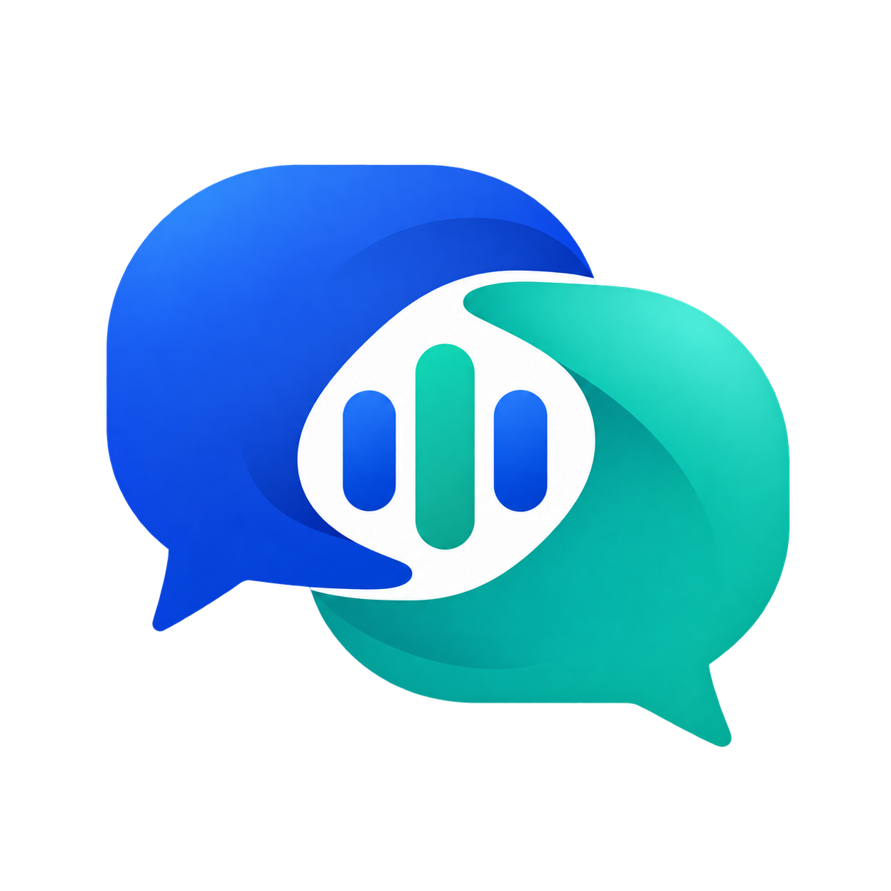
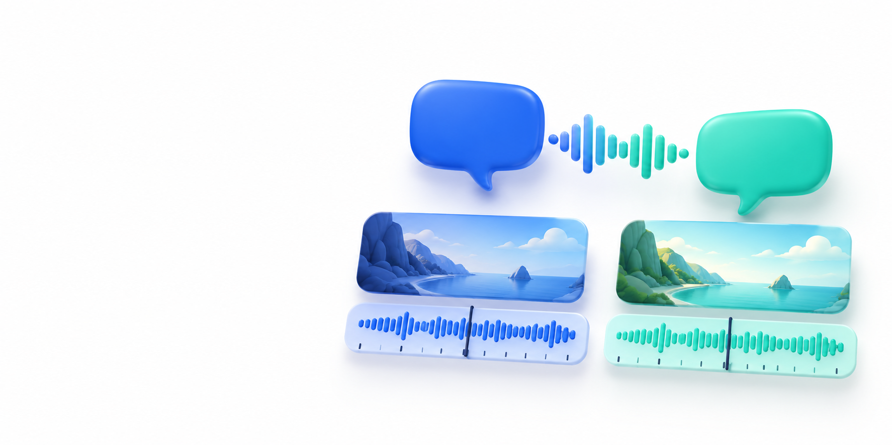

Generated symbol

Original transparent PNGTwo voices. One scene. Generated artwork and editable vectors prepared for the dubbing workspace.
Candidate identity for review. Exact image-model version was not exposed. SVGs are simplified geometric adaptations, not native vector model output. This artwork is not a screenshot or a quality certificate.

Original transparent PNGThe symbol simplifies at favicon scale; the full-size generated raster is retained separately.
System-font text remains editable; rendering can vary between machines. An outlined production wordmark is not claimed.

Original generation and vector design do not establish trademark clearance. Keep private media, voice recordings and credentials out of public artwork.